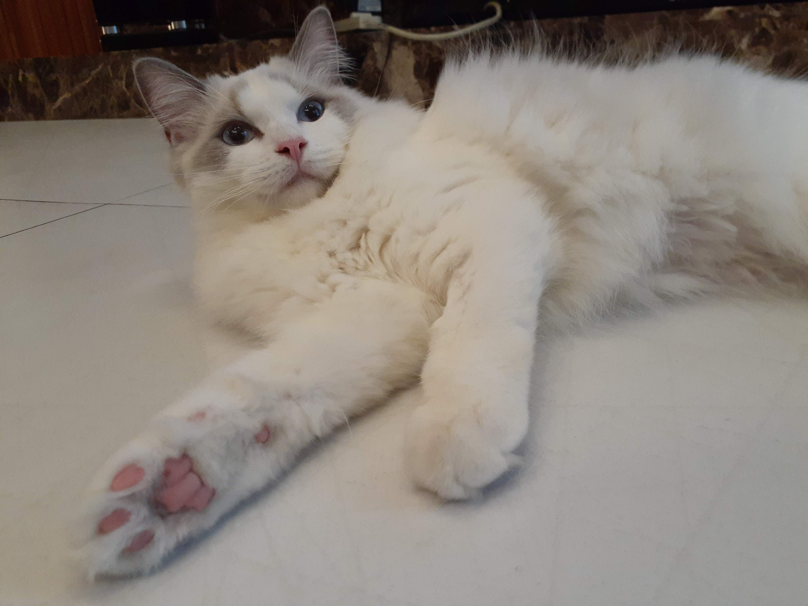

This is a page for two lovely siblings.
Camille is the elder sister, Rodin is the younger brother.
Camille
This is Camille. Her eyes are as blue as the ocean. She is always gentle (maybe a little bit lazy?) and afraid of strangers.

Rodin
This is Rodin. The color of his fur is lighter than his sister. He is always energetic and friendly. Sometimes he’s more like a dog than a cat.
